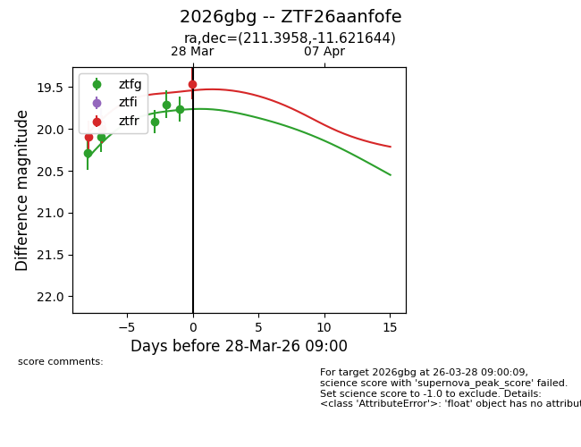
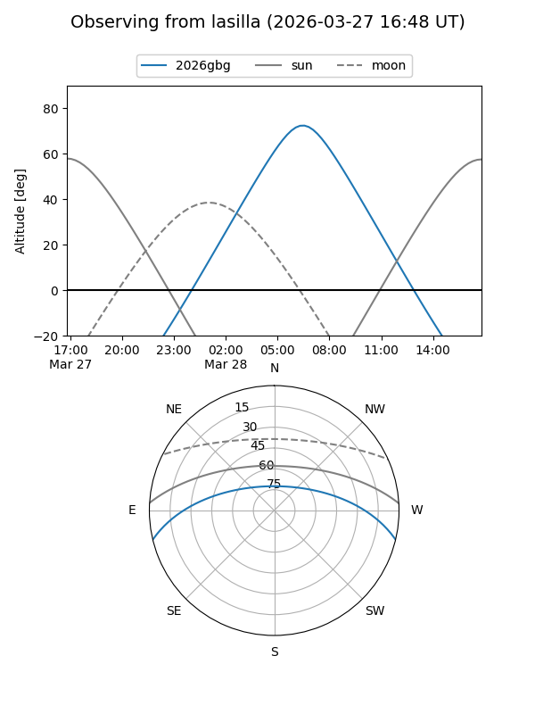
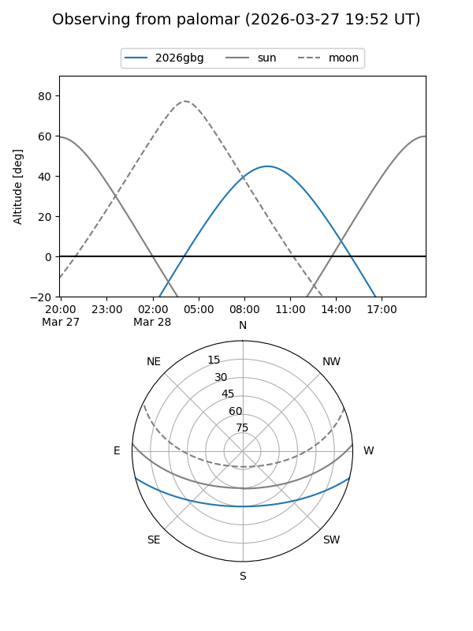
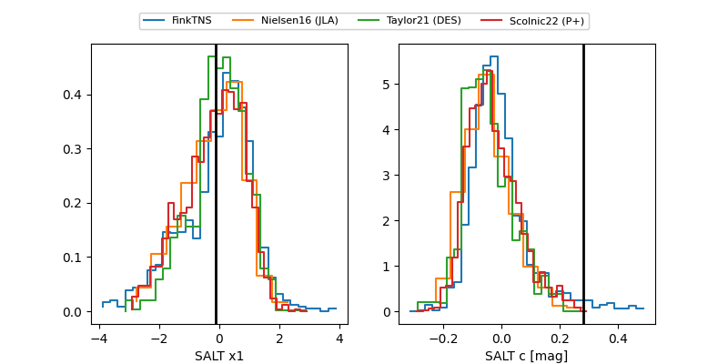

2026gbg
Target 2026gbg at 2026-03-28 09:03
Aliases and brokers:
FINK: link
Lasair: link
ALeRCE: link
TNS: link
YSE: link
alt names
ZTF26aanfofe (ztf,fink_ztf)
2026gbg (tns,yse)
Coordinates:
equatorial (ra, dec) = 211.3958,-11.62164
equatorial (HMS+DMS) = 14:05:34.99,-11:37:17.92
galactic (l, b) = (330.2533,+47.27864)
Flags:
Photometry:
last ztfg=19.76, ztfr=19.46
5 ztfg, 3 ztfr detections
Lightcurve

Visibility


Additional plots
